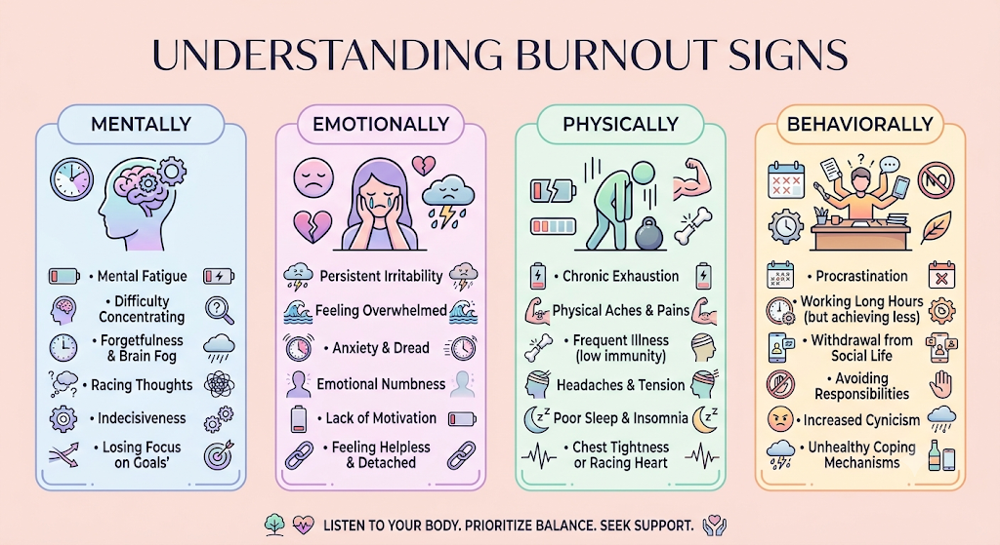

💬 You don’t have to completely fall apart before you’re allowed to say, “This isn’t sustainable anymore.”
We often think of burnout as what happens when we’ve simply taken on too much: too many emails, impossible deadlines, endless responsibilities, and too little sleep.
But burnout is rarely just about a busy schedule. More often, it’s about how long you’ve been operating beyond your emotional, physical, and psychological capacity, along with what you’ve been expecting from yourself along the way.
The Internal State
😩 Exhausted
🫥 Disconnected
😠 Irritable
🧠 Overwhelmed
💭 Mentally Drained
Burnout doesn’t always look like falling apart. Sometimes, it looks like continuing to function while having less and less of yourself available to do it.
🌿 What Exactly Is Burnout?
Burnout is a state of prolonged physical and emotional exhaustion that develops when ongoing demands consistently exceed your available resources.
📌 Quick Definition
Burnout is not a personal failure or a lack of resilience. It is a predictable response to chronic, unmanaged environmental stress across work, relationships, caregiving, or financial pressure.
The 3 Core Pillars of Burnout
😴 01. Exhaustion
You feel physically and emotionally depleted. Rest no longer restores your energy levels.
🫥 02. Cynicism
Things that used to matter feel irritating. “I just don’t care anymore.”
📉 03. Low Efficacy
You doubt your abilities, feel unproductive, and feel like you’re constantly falling behind.
🚦 How Burnout Shows Up in Daily Life
Burnout is sneaky. It rarely arrives as a dramatic breakdown; instead, small changes gradually erode your well-being.

🔎 Interactive Check-In: How Much Are You Carrying?
Read through the checklists below and notice which statements reflect your current reality.
🧠 Mind & Focus
❤️ Emotional Capacity
💤 Physical Well-Being
⚖️ Boundaries & Expectations
💡 Pause & Reflect
Don’t worry about counting your checks. Instead, ask:
What am I carrying that is no longer sustainable?
Where am I expecting more from myself than I would ever expect from a friend?
⏳ The Final Drop in an Overflowing Cup
Burnout doesn’t always hit during your busiest season. Often, it strikes right after.
[ Months of Pushing ] → [ “I’ll rest when it calms down” ] → [ Minor Incident ] → 💥 “I can’t do this.”
That small event, whether a missed email or a minor request, didn’t cause the breakdown; it was simply the final drop in an already overflowing cup.
⚖️ Expectation vs. Reality
A major engine of burnout is the gap between what we think we should handle and what we realistically have capacity for.
🔴 Expectation: “I should be able to handle all of this if I were better organized.”
🟢 Reality: “There simply is not enough time or capacity for everything.”
🔴 Expectation: “I need to say yes so I don’t let anyone down.”
🟢 Reality: “Every ‘yes’ has a hidden cost, often paid with your health or peace.”
🔴 Expectation: “Once I clear my to-do list, I’ll finally take a real break.”
🟢 Reality: “The list will never reach zero. Rest must be prioritized today.”
🔄 Breaking the Self-Fulfilling Cycle
Burnout feeds on itself. Breaking the cycle requires changing the loop:
Overextension → Exhaustion → Low Output → Guilt → Try Harder → Burnout
🛑 The Circuit Breaker
Recovery requires more than taking a day off; it requires dismantling the habits and beliefs that keep pushing you into overextension.
🧩 Why Rest Alone May Not Fix It
If you take a week off to recharge, but return to the same habit of saying “yes” to every demand and ignoring your limits, the cycle restarts immediately.
To create lasting recovery, reflect on these questions:
- Why does slowing down provoke anxiety or discomfort?
- Why does setting a boundary trigger so much guilt?
- Why do I feel I have to “earn” the right to rest?
🛠️ Starting the Recovering Process
- Identify What Is Draining You Categorize energy drains into: Control, Influence, or Acceptance.
- Establish Clear Boundaries Set firm cut-off times for work and protect your personal time.
- Shift From “Everything” to “Enough” Ask: “What actually matters most today?” instead of trying to do it all.
- Diversify Your Rest Incorporate physical, mental, emotional, social, and creative rest.
- Challenge Core Beliefs Uncouple your productivity from your personal sense of self-worth.
The Dimensions of Rest
💬 A Therapeutic Perspective
Therapy provides a dedicated space to explore not just what is exhausting you, but why you struggle to slow down. Unhelpful patterns, such as people-pleasing, perfectionism, or over-functioning, are often coping mechanisms that served a purpose earlier in life.
🌱 Therapy helps you untangle those patterns and construct a life built around long-term sustainability rather than constant survival.
🌅 Building a Sustainable Life
Burnout asks: “How can I keep doing all of this?”
A better question is: “What would it look like to build a life I don’t constantly need to recover from?”
🤍 You Don’t Have to Do It Alone
If you’re feeling persistently exhausted, overwhelmed, or disconnected, reaching out to a mental health professional can help you navigate a path forward.
🌿 You are allowed to slow down.
🌿 You are allowed to have limits.
🌿 You are allowed to rest.
🌿 You are allowed to build a life that works for you.
Curious for more? Click here for an initial consultation.
Ana Sharma
Clinical Therapist
September 1, 2026